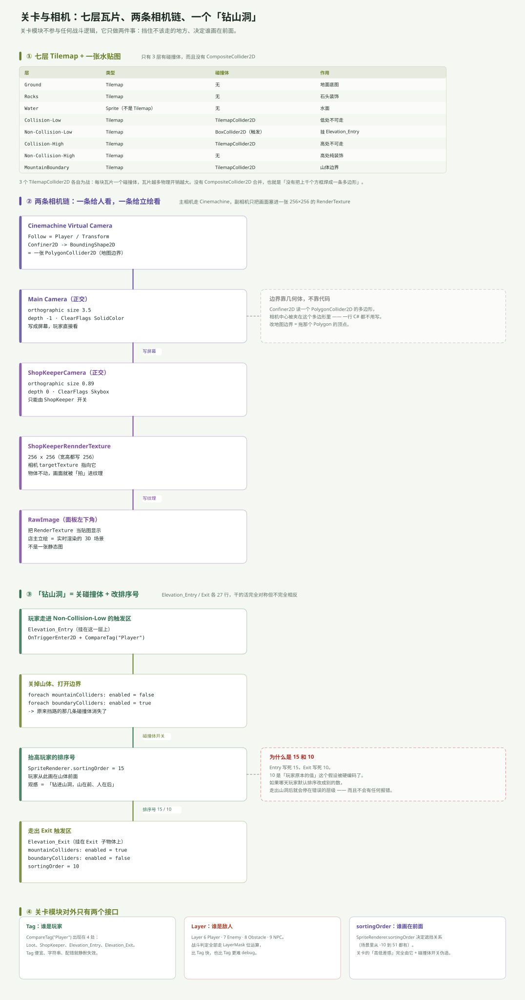

一句话说清
关卡模块是整个工程里唯一和战斗完全无关的部分。它不做判定、不改数值，只做两件事：
- 挡住不该走的地方（碰撞体）
- 决定谁画在前面（sortingOrder）
「高低差」这个听起来很高级的效果，就是用这两件事伪造出来的——没有任何真正的 3D 或深度计算。
七层瓦片，只有三层有碰撞

Elevation_Base 这个空物体下挂着一个 Grid 和 7 个 Tilemap：
| 层 | 类型 | 碰撞体 | 作用 |
|---|---|---|---|
Ground | Tilemap | — | 地面底图 |
Rocks | Tilemap | — | 石头装饰 |
Water | Sprite | — | 水面 |
Collision-Low | Tilemap | TilemapCollider2D | 低处不可走 |
Non-Collision-Low | Tilemap | BoxCollider2D（触发） | 挂 Elevation_Entry |
Collision-High | Tilemap | TilemapCollider2D | 高处不可走 |
Non-Collision-High | Tilemap | — | 高处纯装饰 |
MountainBoundary | Tilemap | TilemapCollider2D | 山体边界 |
两个容易忽略的点：
Water 不是 Tilemap，它只是一张 SpriteRenderer。所以水面没有瓦片级碰撞，靠别的层挡住。
只有 3 个 TilemapCollider2D，而且没有 CompositeCollider2D。 意思是每块瓦片各生成一个方框碰撞体，而不是把它们焊成一条多边形。瓦片越多，物理体越多——这是小地图无所谓、大地图会疼的选择。
相机有两条链，服务两个目的
链 A：给玩家看的
Cinemachine Virtual Camera（Follow = Player）
→ Confiner2D（BoundingShape2D = 一张 PolygonCollider2D）
→ Main Camera（正交，size 3.5，depth −1，ClearFlags = SolidColor）
→ 屏幕边界限制这一块值得单独说：Confiner2D 读的是一个 PolygonCollider2D 的多边形顶点，相机中心被夹在这个多边形里。一行 C# 都不用写，改地图边界就是拖那个 Polygon 的顶点。
这是整个工程里「配置代替代码」做得最好的一处。
链 B：只给立绘看的
ShopKeeperCamera（正交，size 0.89，depth 0，ClearFlags = Skybox）
→ targetTexture = ShopKeeperRennderTexture（256 × 256）
→ RawImage（面板左下角）店主立绘不是一张贴图，是实时渲染的 3D 画面：开店时把副相机挪到店主位置并 SetActive(true)，它渲染的东西被写进那张 256×256 的 RenderTexture，再由面板里的 RawImage 显示出来。
所以「店主」永远不会出现在主画面里（因为它只往 RT 写），但它会跟着场景实时变化——换皮肤、加动画，立绘立刻跟着变。
depth 的用法也值得记一笔：主相机 −1、副相机 0，看起来副相机在后，但因为副相机渲染到纹理而不是屏幕，实际不参与主画面的叠加顺序。
「钻山洞」：关碰撞 + 改排序号
这是关卡模块唯一的逻辑，两个脚本各 27 行，完全对称：
// Elevation_Entry：走进 Non-Collision-Low 的触发区
foreach (var mountain in mountainColliders) mountain.enabled = false;
foreach (var boundary in boundaryColliders) boundary.enabled = true;
collision.gameObject.GetComponent<SpriteRenderer>().sortingOrder = 15;
// Elevation_Exit：走出 Exit 子物体的触发区
foreach (var mountain in mountainColliders) mountain.enabled = true;
foreach (var boundary in boundaryColliders) boundary.enabled = false;
collision.gameObject.GetComponent<SpriteRenderer>().sortingOrder = 10;三步合起来产生的观感：
- 原来挡路的山体碰撞体被关掉 → 玩家能走进去
- 另一组边界碰撞体被打开 → 走不出山洞范围
- 玩家排序号抬到 15 → 从此画在山体前面
「山在前、人在后」这件事，本质就是同一个 Sprite 的 sortingOrder 变了。
15 和 10 都是写死的
Entry 写死 15，Exit 写死 10。10 这个数字隐含了一个假设：「玩家的默认 sortingOrder 就是 10」。
如果哪天玩家默认排序改成别的值，走出山洞后就会停在错误的层级——不会报错，只会「莫名其妙钻到山后面去了」。
正确做法是在 Entry 里先记住原值（originalOrder = sr.sortingOrder），Exit 时还原。
Tag / Layer / sortingOrder：三个「静默失效」的机制
关卡模块往外暴露的接口，全是这三样。它们的共同点是：配错了不会报错，只会「不生效」。
| 机制 | 用在哪 | 错的后果 |
|---|---|---|
CompareTag("Player") | Loot、ShopKeeper、Elevation_Entry、Elevation_Exit | Tag 拼错 → 触发器完全不响应 |
LayerMask 位运算 | 所有战斗判定（OverlapCircleAll、Arrow 碰撞） | 层配错 → 打不中、箭穿过去 |
sortingOrder | 玩家 / 瓦片 / 所有 Sprite | 数字错 → 人钻到山里、道具看不见 |
层与 Tag 的实际配置：
- Tag：
Player、NPC（只有两个自定义 Tag） - Layer：6
Player、7Enemy、8Obstacle、9NPC
分工很明确：Tag 用来「这是谁」，Layer 用来「撞不撞、打不打」。 战斗走 Layer（快、可位运算），交互走 Tag（简单、可读）。
关卡模块与其它模块的接缝
| 方向 | 接口 | 形态 |
|---|---|---|
| 出（关卡 → 玩家） | SpriteRenderer.sortingOrder = 15 / 10 | 直接改组件 |
| 出（关卡 → 碰撞） | Collider2D.enabled = true / false | 直接改组件 |
| 入（世界 → 关卡） | OnTriggerEnter2D + CompareTag("Player") | 触发器回调 |
| 旁（相机 → 表现层） | RenderTexture → RawImage | 资产引用 |
关卡模块是全场依赖最少的模块：它只抓玩家的 SpriteRenderer 和一组 Collider2D，不认识 StatsManger、不认识任何事件，也不参与战斗。
一句话总结
关卡的「技术含量」集中在两个伪造上：用碰撞体开关伪造「能进去」，用 sortingOrder 伪造「在里面」。相机那边则用 Cinemachine 的 Confiner 省掉了一整套边界代码。
真正欠的是三处硬编码：sortingOrder 的 15 / 10、ExpCanvas 的参考高度 108、以及「玩家默认排序就是 10」这个从未被写下来的假设。
回到总览：7 个模块的全景与五类接线。